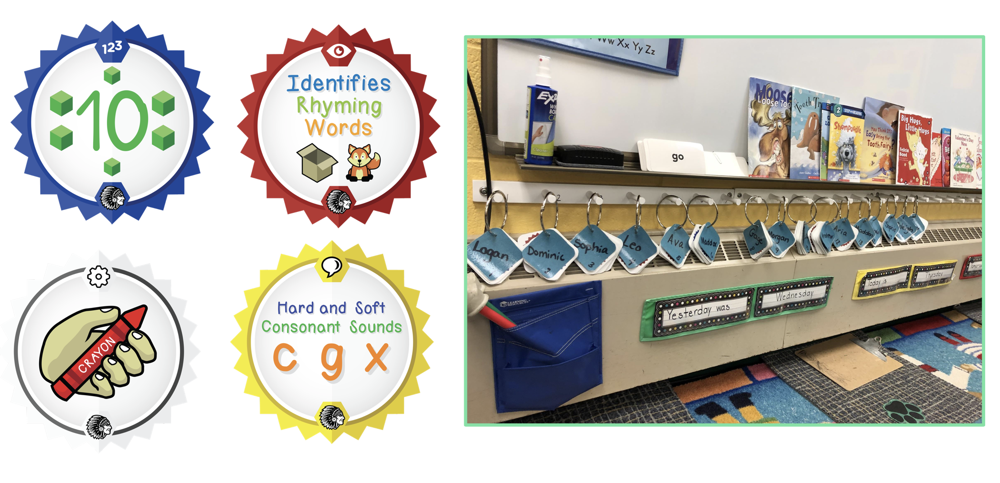
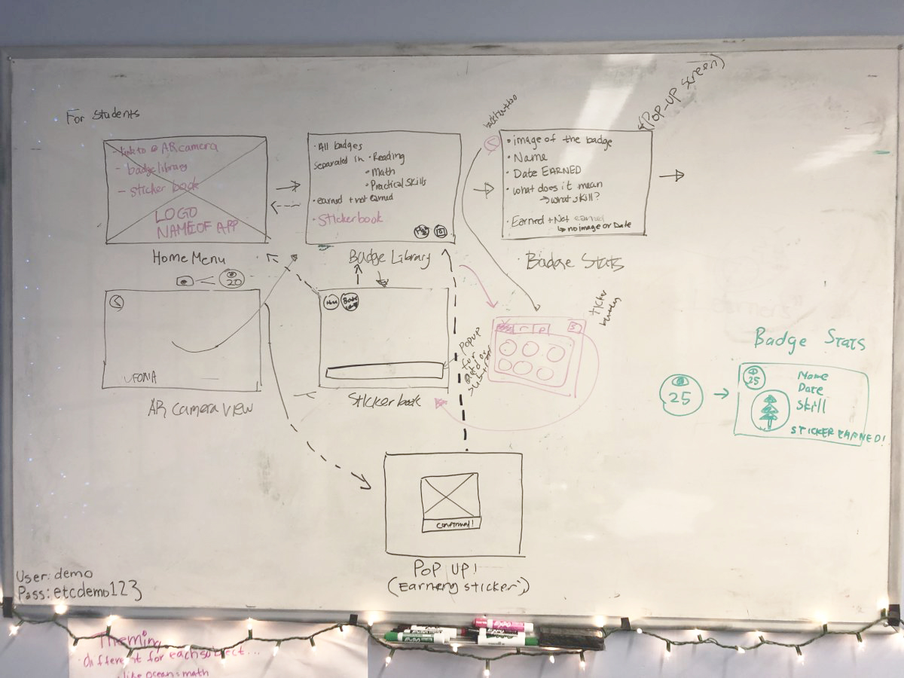
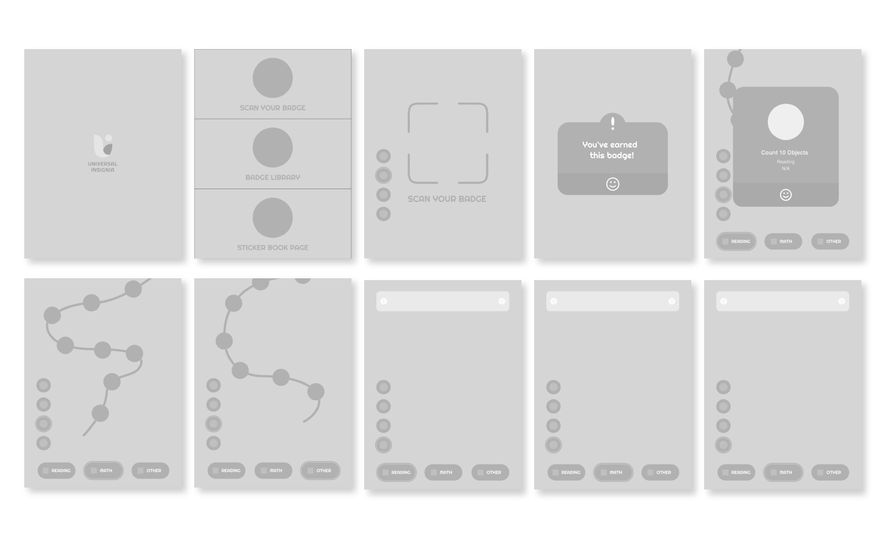
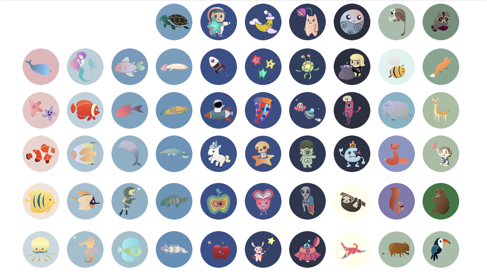
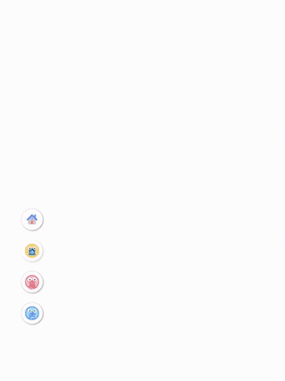
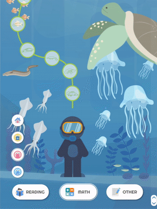
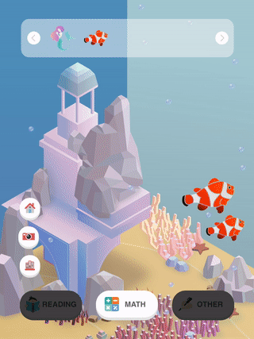
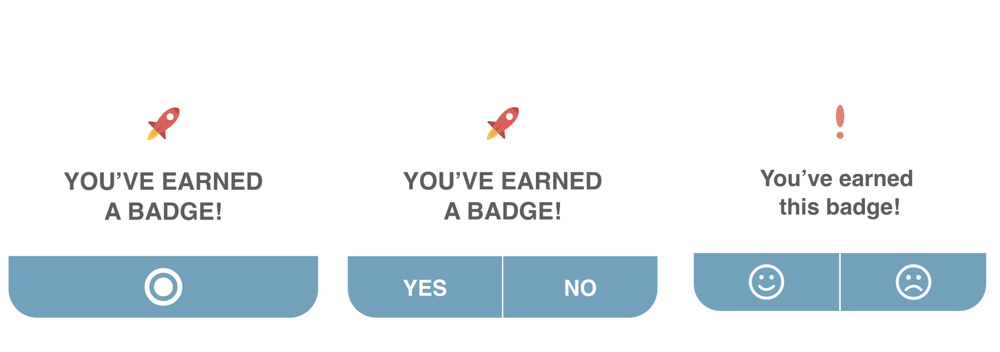
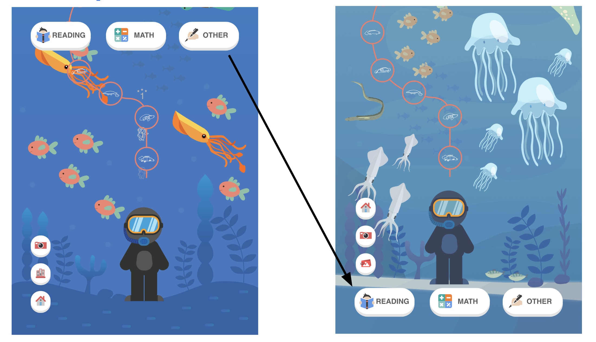
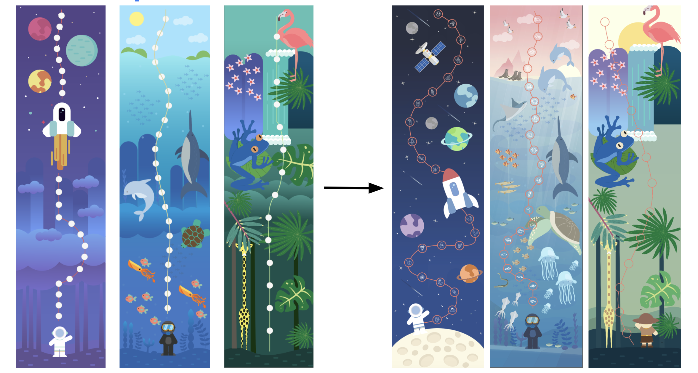

Universal Insignia

Universal Insignia is a client-based semester-long team project at ETC, CMU. Working closely with Elizabeth Forward District School in Pittsburgh, we created an interactive iPad application along with the client’s current physical badging system to improve the student experience. This experience allows students to celebrate and interact with their achievements as well as give parents the unique opportunity to engage directly with their child’s education.
In working with our client, our team quickly discovered issues that we can improve for the students, parents, and teachers' experience. Currently, Elizabeth forward district school has an existing badging system in which their kindergarten students do not receive grades but rather badges tailored to specific skills. Every Friday, they have a badging ceremony in which the students receive physical paper badges, but there exist some issues with this system.
1. Students want to further interact with their achievement, but the current badging system did not allow them to do so.
2. The parents know students received the badges, but it does not provide enough information on their skills.
3. the date the students received the badges or the skills the students will need badges.
My team and I worked together with the District schools to provide a design solution in fun, engaging and informative way.
1. For teacher / badge scoring noti, easy imports class lists skills, functionality based on front end
2. For student / badge display that can be listed as wall paper, visually fun!
3. For parent / notify student's badge and progress, simple sign up, or simple notification
4. For app / Time stamp, badge display can be Black and white, and turns to color when achieved, push suggestions for practice
A better way to make a product that could be satisfy the target audience is through understanding how the competitors are doing currently in the target market. We went through the product reviews of each competitors' product to find the common problems faced, and heristic evaluation to discover opportunities that impact our prodocut. Below is a quick chart of a evaluation/assessment of the competitors products in the market:
After we did interviews and observations, we were able to figure out our target audiences and their needs. Parents, teachers, and students (age from 4 to 6) are our main target audiences. Each group has different needs and goals.

After brainstorming session, we finally decided on suitable solution for our problem space and what features or functionality will it possess.
1. Have difficulty with notifying students’ progress
- Once students earned badges, they can store the physical badges into iPad application. They can scan their badges, and it will automatically store in the app.
2. Need to check the date the badge was earned as well as the skill associated with the badge
- The school district divided badges up into reading, math, and practical skills. With these categories, we chose to these around nature including Reading became ocean, math became space, and practical skill is forest. Once they click the icon that show earned badge, it will show date and the detail information about the badge.
3. Students want to further interact with their achievement, but the current badging system did not allow them to do so.
- The sticker book page in the app foster students’ creativity by playing with their earned badges.
Problem+Solution=Hypothesis: We believed that by creating an app that allows students, teachers, and parents to view and track the students’ badge status as well as creating further engaging experience, we thought the communication problem and lack of motivation issue are solved. We will know this to be true when we see the shortcomings of the physical badging system.
Designing for the user experience began from sketching out a typical user journey based on the achievement of specific tasks within the app. Once the user journey had been established, we began to design user flow for use cases.
Based on the main features and task flow of our platform, we created initial sketch and wireframes of our prototype with the following user flows: Main page, Scan Your Badge, badge Library, Sticker Book pages. At first, we sketched out some of the possible solutions, and narrow down into one solution. We used Adobe XD for low-fidelity prototyping the app.
We started designing high fidelity prototypes and designed the major screen of the app. Also, we re-designed all physical badges that tailored to specific skills.
We defined the univers and identity of our application : we agreed upon a vivid and dynamic color palette because we wanted to create a playful and thrilling environment. It also impacted our typographic choice, with classic fonts with small rounded details that gives them a warm feeling.
Since Universal Insignia's identity comes from it motivating kindergarten kids that aims to build the badge library system store the badges, we chose light blue for its primary color that seems to go well with its mission. we tried to make the interface clean and friendly so that users could have enjoyable experience from our app.
The main page is divided into 3 different part: scan your badge, badge library, and sticker book page.

Universal Insignia allows the students to scan their badges into their “badge library” So once they earn, they can scan their new badges and it will appear in their library.

Students can check the date the badge was earned as well as the skill associated with the badge. The library also shows badges they have yet to earn and the skills associated with those badges. So the students and parents know what needs to be worked on. The school district divided badges up into (3) Categories: Reading, Math and Practical Skills. We chose to theme these categories around nature because it is something the students learn about as well relates to both boys and girls. Reading became Ocean, Math is Space and Practical Skills is Forest. We decided a linear structure would be best, as the badges are earned linearly and also the students loved swiping on the iPads. The swiping movement will also allow us to use some parallax effect to create fun animations.

For additional student interaction we thought it would be fun to add a sticker book function so that the students can have some creative play with their badges. The images on the badge translates to a sticker that they can use on these pages. As the student earns more badges, they have more stickers to play with. The pages are also divided into Ocean, Space and Forest.

Playtesting was very important to our team. We wanted to be sure our controls worked as well as the style. We wanted the app to look like it was designed with our audience in mind.
Devloping prototypes and rapidly iterating are all based on testing results. We learned even small things, like this age range tends to find it easier to click buttons on the bottom of the ipad. We had all of our directional controls at the top, and they were not getting used!
  
As interdiscplinary team interested in creating educational experience, this project provided a delighful opportunity to examine kindergarten school domain and learn how to work with restrincting factors. By working with the teachers-children-parents, we learned to prioritize our design proces and communication behaviors to maximize work efficiency. Interactions with age from 4 to 6 helped us get a better sense of the child education landscape and in school shortcomings with their badging system. The preschool education institution field, with fostering motivation for children, was challenging to work within but was worth battling to explore to design interactive iPad application to bring motivation out of classroom in engaging way.